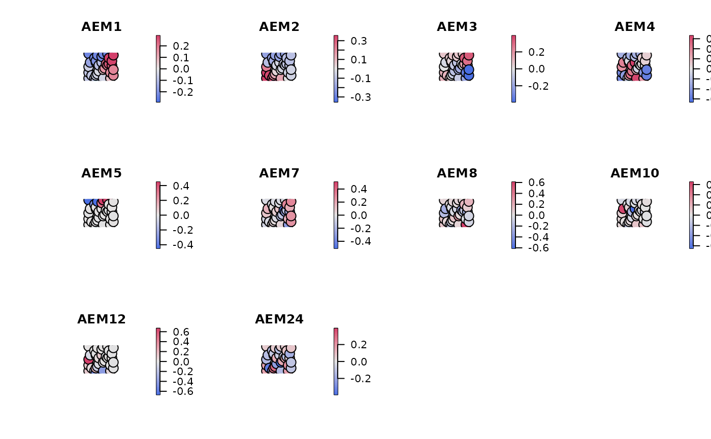

Construct asymmetric eigenvector maps (AEM) from an OCN
OCN_to_AEM.RdFunction that computes asymmetric eigenvector maps from an OCN. These can be used as spatial variables to assess spatial gradients in environmental or ecological data.
Arguments
- OCN
A
riverobject as produced byaggregate_OCN.- level
Aggregation level at which AEMs are to be calculated. It must be equal to either
"RN"or"AG".- weight
Determines how and if weights should be used to compute the AEMs. Defaults to
NULL, which applies equal weights to all links of the OCN. It can be one of"gravity","exponential","linear","parabolic"or a user-specified function. See details.- resistance
Identifies how resisitance (i.e., the variable negatively related to the link weight) is calculated. Defaults to
"length"(i.e., resistance equal to link length). Alternatively,resistance = "time"uses water travel time to weigh the links. In such a case, water velocities must be contained in theOCN(e.g. viarivergeometry_OCN).- moranI
Logical. Should Moran's I statistics be computed and random tests be performed via
moran.randtest?
Value
A list as produced by a call to aem. If moranI = TRUE, a krandtest resulting from
the call to moran.randtest is appended to the output list.
Details
Possible character strings for weight are:
"gravity"\(w(r) = r_{max}/r\)
"exponential"\(w(r) = \exp(-r/r_{max})\)
"linear"\(w(r) = 1 - r/r_{max}\)
"parabolic"\(w(r) = 1 - (r/r_{max})^2\)
where w is the weight value for a given link, r its resistance value and r_{max} the maximum resistance value across all links.
Examples
OCN <- aggregate_OCN(landscape_OCN(OCN_20), thrA = 5)
res <- OCN_to_AEM(OCN) # unweighted AEMs
res$values # eigenvectors associates with the AEMs
#> [1] 0.915995966 0.703584690 0.223275053 0.135236684 0.113092449 0.086647771
#> [7] 0.073677343 0.061448350 0.050742640 0.045236076 0.043447475 0.041571041
#> [13] 0.030303030 0.030303030 0.030303030 0.030303030 0.030303030 0.018679589
#> [19] 0.016350888 0.015302395 0.012966727 0.011702563 0.010343253 0.009391859
#> [25] 0.008360832 0.008119672 0.007998280 0.007379420 0.006791215 0.006434914
#> [31] 0.006082566 0.005962337 0.005693101
plot(OCN, res$vectors[,1], drawNodes = TRUE,
colLevels = c(-max(abs(res$vectors[,1])), max(abs(res$vectors[,1])), 100),
colPalette = hcl.colors(100,"Blue-Red 2")) # plot first eigenvector
res_g <- OCN_to_AEM(OCN, weight = "gravity") # weighted AEMs based on gravity model
fn <- function(r) {1 - r^0.5}
res_f <- OCN_to_AEM(OCN, weight = fn) # weighted AEMs based on user-specified weight function
# compute Moran's I and perform permutation test to assess which eigenfunctions should be retained
# \donttest{
res_g <- OCN_to_AEM(OCN, weight = "gravity", moranI = TRUE)
selectedAEM <- which(res_g$moranI$pvalue < 0.05)
# selected eigenfunctions are those with significantly positive spatial autocorrelation
# plot selected eigenfunctions
# (these could be e.g. used as spatial covariates in a species distribution model)
par(mfrow=c(3,4))
for (i in selectedAEM){
plot(OCN, res$vectors[,i], drawNodes = TRUE,
colLevels = c(-max(abs(res$vectors[,i])), max(abs(res$vectors[,i])), 100),
colPalette = hcl.colors(100,"Blue-Red 2"))
title(paste0("AEM",i))
}
# }
